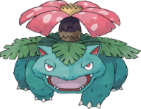
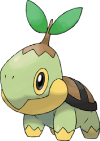
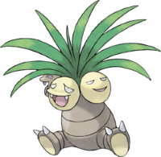
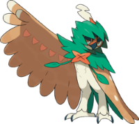

Pflanze Typ Pokemon's

Bisaflor

Chelast

Kokowei

Silvarro
Willkommen zurück im Zoo Zürich! Wenn Sie Pflanzen-Pokemons lieben, dann haben wir auch für Sie eine großartige
Auswahl. Auf unserer Website zeigen wir nur die vier beliebtesten Pflanze-Typen, darunter das bezaubernde Bisaflor,
das starke Silvarro, das lustige Kokowei und das niedliche Chelast.
Aber das ist noch längst nicht alles, was wir zu bieten haben. In unserem Zoo gibt es viele weitere Pflanze-Typen,
die darauf warten, von Ihnen entdeckt zu werden. Erleben Sie, wie sie in unserer sorgfältig gestalteten Umgebung
gedeihen und interagieren. Wir sind sicher, dass Sie eine unvergessliche Zeit haben werden und freuen uns darauf,
Sie bei uns begrüßen zu dürfen!